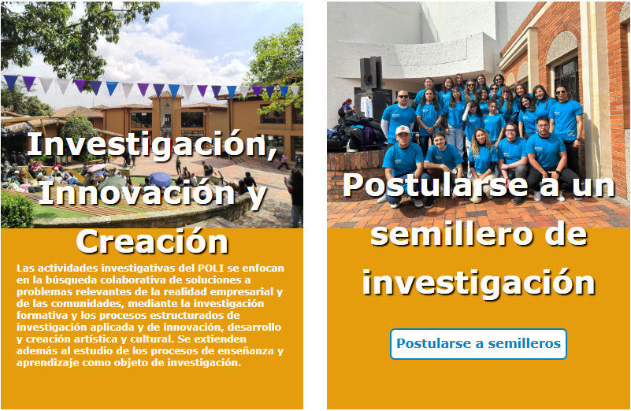

FOTO DEL PROFESORMónica Lizeth Sánchez Arévalo
⚙ OPINA
Gerencia de Proyectos de Ingeniería e Iniciativas Empresariales
👤 Nombre: Mónica Lizeth Sánchez Arévalo
✉ Correo: xxxxx@poligran.edu.co
Colider:
✍ Postúlate →📚 Formativa • 🌱 Semilleros • 👥 Grupos • 📝 Proyectos
Acompañamos a estudiantes y docentes en el camino de investigar, innovar y crear. Conectamos la formación con preguntas reales, proyectos y semilleros donde se aprende haciendo.
Grupo de investigación en Ciencias Básicas. Matemática, física y ciencias aplicadas.
Grupo de investigación en Diseño. 3 líneas, 5 servicios, 11 proyectos.
Grupo de la Escuela OPINA: Optimización, Infraestructura y Automatización.
Grupo de la Escuela de Tecnologías de la Información y las Comunicaciones.
Dirección de Investigación, Innovación y Creación.
Líneas, servicios, proyectos y contacto general FIDI.
Acompañamos a estudiantes y docentes en el camino de investigar, innovar y crear. Conectamos la formación con preguntas reales, proyectos y semilleros donde se aprende haciendo.
Fomentar la investigación formativa, la innovación y la creación como parte de la formación, con proyectos que aportan conocimiento y soluciones.
Acompañamos semilleros, grupos de investigación, líneas y proyectos, y orientamos a la comunidad para postularse y participar.
Para estudiantes que quieren iniciar en investigación y para docentes que dirigen semilleros y proyectos.
Quién coordina la investigación en la Facultad.
👤 Nombre: PhD. José Manuel Chauta Torres
Correo: jchauta@poligran.edu.co
👤 Nombre: Gustavo Andrés Araque González
Correo: garaque@poligran.edu.co
Las 4 escuelas que conforman la Facultad.
Director: Edgar Alberto Barón Poveda
Correo director: eabaronp@poligran.edu.co
Líder de investigación: PhD. Oscar Leonardo Acevedo Pabón
Grupo: CITIC
Director: Leonardo Páez Vanegas
Correo director: leopaezv@poligran.edu.co
Líder de investigación: Victoria Eugenia Peters Rada
Correo líder: vpetersr@poligran.edu.co
Grupo: DAS
Directora: PhD. Carmelina Rosario Cadenas Anaya
Correo directora: ccadenas@poligran.edu.co
Líder de investigación: Jairo Enrique Parra Herrera
Correo líder: jeparrah@poligran.edu.co
Grupo: OPINA
Director: Ricardo César Gómez Vargas
Correo director: rgomezva@poligran.edu.co
Líder de investigación: Giovanny Andrés Piedrahita Solorzano
Correo líder: gapiedrahita@poligran.edu.co
Grupo: Entornos TIC (E-TIC)
Encuentra el semillero que te interesa, conoce quién lo dirige y postúlate en SIGIIP.
30 semilleros FIDI: OPINA - E-TIC - Diseño - Ciencias Básicas
El formulario está en SIGIIP. Sigue estos pasos y no te pierdas:
Si ya estás en SIGIIP: filtra por Grupo de Investigación, elige DICI-HUB, da clic en Buscar y luego en Postularse a semilleros.

Haz clic en la imagen para ir a llenar el formulario en SIGIIP.
Así se ve el formulario de postulación.
👤 Nombre: Mónica Lizeth Sánchez Arévalo
✉ Correo: xxxxx@poligran.edu.co
Colider:
✍ Postúlate →👤 Nombre: Jairo Enrique Parra Herrera
✉ Correo: xxxxx@poligran.edu.co
Colider:
✍ Postúlate →👤 Nombre: Gustavo Andrés Araque González
✉ Correo: garaque@poligran.edu.co
Colider:
✍ Postúlate →👤 Nombre: Álvaro Enrique Hilarión Madariaga
✉ Correo: xxxxx@poligran.edu.co
Colider:
✍ Postúlate →👤 Nombre: Juan Carlos Gutiérrez Vanegas
✉ Correo: xxxxx@poligran.edu.co
Colider:
✍ Postúlate →👤 Nombre: Albeiro Hernán Suárez Hernández
✉ Correo: xxxxx@poligran.edu.co
Colider:
✍ Postúlate →👤 Nombre: Jhoan Sebastián Rodríguez Rodríguez
✉ Correo: xxxxx@poligran.edu.co
Colider:
✍ Postúlate →👤 Nombre: Gina Paola Díaz Avendaño
✉ Correo: xxxxx@poligran.edu.co
Colider:
✍ Postúlate →👤 Nombre: Gabriel Eduardo Ávila Buitrago
✉ Correo: xxxxx@poligran.edu.co
Colider:
✍ Postúlate →👤 Nombre: José Manuel Chauta Torres
✉ Correo: jchauta@poligran.edu.co
Colider:
✍ Postúlate →👤 Nombre: Isabel Andrea Mahecha Nieto
✉ Correo: xxxxx@poligran.edu.co
Colider:
✍ Postúlate →👤 Nombre: Víctor Augusto Pedraza Bonilla
✉ Correo: xxxxx@poligran.edu.co
Colider:
✍ Postúlate →👤 Nombre: Boris Mauricio Revelo Rendón
✉ Correo: xxxxx@poligran.edu.co
Colider:
✍ Postúlate →👤 Nombre: Wilson Eduardo Soto Forero
✉ Correo: xxxxx@poligran.edu.co
Colider:
✍ Postúlate →👤 Nombre: Neider Xavier Vergara Humánez
✉ Correo: xxxxx@poligran.edu.co
Colider:
✍ Postúlate →👤 Nombre: Francisco Javier González Aguirre
✉ Correo: xxxxx@poligran.edu.co
Colider:
✍ Postúlate →Todos los botones POSTÚLATE abren la misma página de SIGIIP.
Cada grupo trabaja líneas, servicios y proyectos. Para el detalle de cada grupo — líneas, servicios, proyectos, contacto, enlace a SIGIIP y Alejandría — consulta SIGIIP y Alejandría, donde está la información oficial y actualizada.
Grupo de la Escuela de Ciencias Básicas.
Grupo de la Escuela OPINA.
Grupo de la Escuela de Tecnologías de la Información y las Comunicaciones.
Las líneas orientan los proyectos de los grupos y los semilleros. Los proyectos se gestionan y consultan en SIGIIP y Alejandría.
👤 Nombre: PhD. José Manuel Chauta Torres
Correo: jchauta@poligran.edu.co
👤 Nombre: Gustavo Andrés Araque González
Correo: garaque@poligran.edu.co